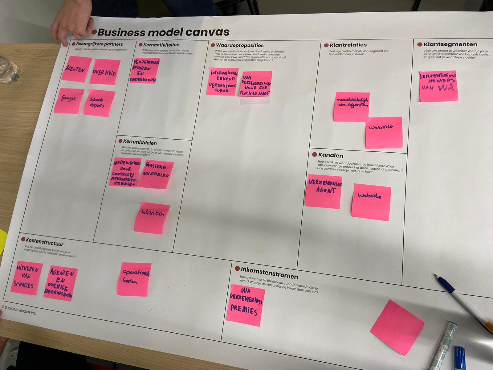

Marieke Pas


Tijdens de tweede SMART BUSINESS les was er een gastcollege van Geert Rensen. Samen met hem hebben we naar een casus gekeken van het bedrijf AXA in Turkije. AXA is een dochterbedrijf van een internationale verzekeraar. Deze casus heb ik gedaan met Stijn, Roy en Dirk. Deze oefening bestond uit een aantal stappen.
Tijdens de eerste stap moesten we het Business Model Canvas (BMC) voor de casus gaan uittekenen. Een BMC is een manier om overzichtelijk te krijgen hoe een organisatie waarde oplevert en dit behoudt. Dit model kende ik al en ik heb deze ook al moeten invullen in een vorig semester. Hieronder is het BMC dat ik samen met mijn groepje heb ingevuld.
De volgende stap was om een oplossing voor het probleem te bedenken. In Turkije was het namelijk het geval dat veel fraude werd gepleegd met autoverzekeringen. Daarnaast is Turkije een autoland en kan er op elke hoek van de straat een WA-verzekering worden afgesloten. Aan ons de vraag om een oplossing te bedenken om op deze manier waarde te creeën. Laatst had ik een artikel gelezen over een plan van ANWB om een beacon in de auto in te stellen. Een beacon is een bluetooth apparaatje dat verbonden is met je auto. Hier besloten we dus meer informatie over op te zoeken. Op deze manier werd onze oplossing: het instellen van een beacon in een auto om het rijgedrag te meten. Daarbij was het ook belangrijk om niet alleen te meten om te kunnen straffen, maar ook juist om te kunnen belonen om mensen te motiveren veiliger en zuiniger te rijden. Dit zou bijvoorbeeld kunnen met presentjes of kortingen. Hieronder staat de presentatie afgebeeld die wij hebben gemaakt.


Toen we de presentatie hadden gegeven, was de gastdocent erg tevreden over ons verhaal. Achteraf bleek ook dat zij dezelfde oplossing hadden bedacht met een beacon en om dezelfde redenen. Hierdoor hadden wij ook het practicum gewonnen. Dat gaf mij een erg goed gevoel. We hebben het ook verdiend, we hebben goed samengewerkt en we zijn van onze intuïtie uitgegaan. Het was ook erg leuk om te doen!